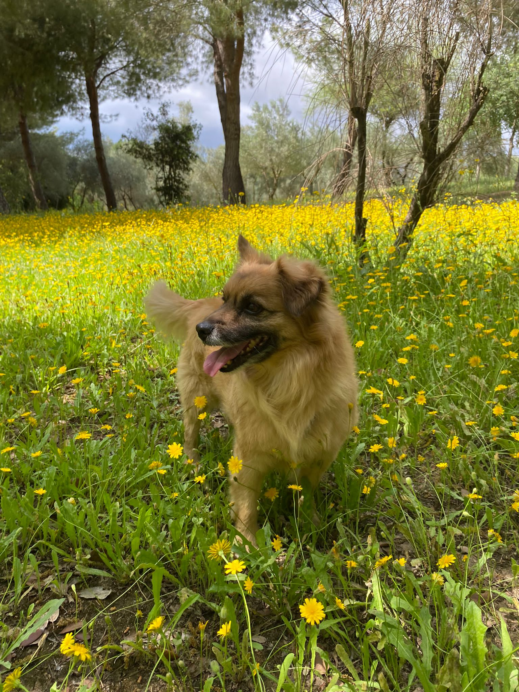

Pasear a mis perros
Disfruto salir a caminar con mis perros por el parque, especialmente en las mañanas frescas. Es un momento perfecto para relajarme y conectar con la naturaleza.

 Aficiones
AficionesDisfruto salir a caminar con mis perros por el parque, especialmente en las mañanas frescas. Es un momento perfecto para relajarme y conectar con la naturaleza.
Me encanta pasar tiempo en la playa simplemente admirando el paisaje, especialmente en los meses del año en las que la playa está menos concurrida
Básicamente eso, un buen plato de pasta👍